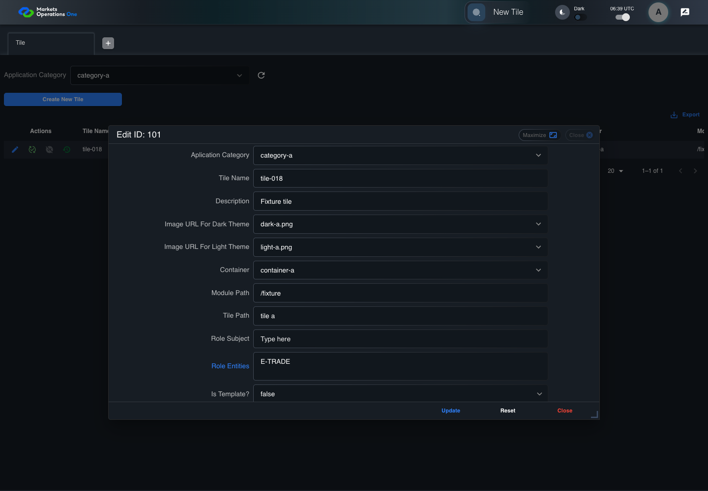
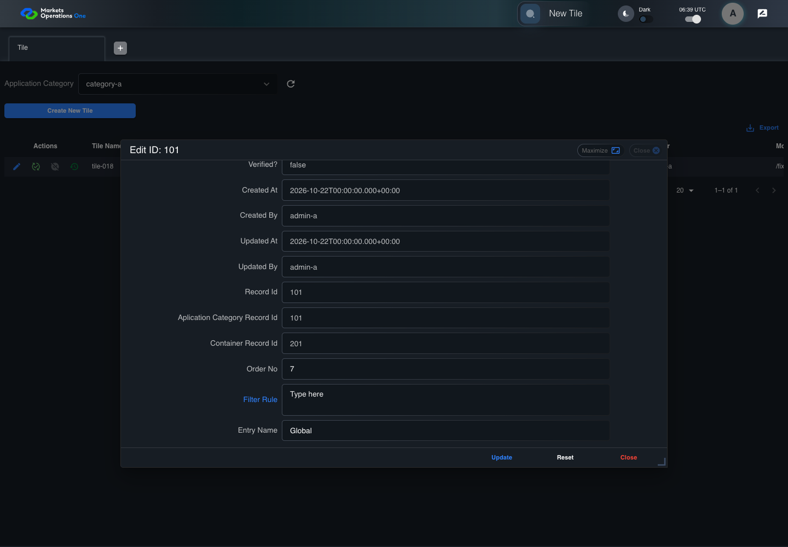

BFF-ADM-018 current BFF administration through actual UI
PASS · application/run-072/bff-adm-018-current-bff-administration-through-actual-ui-234cb254254e-attempt-1 · ACTUAL_APPLICATION_LOCAL_SERVICES
Actual current React and exact-current BFF admin controllers/services/JPA with actual migration DDL in disposable PostgreSQL. Controlled OUD/EMS2 identities and local Spring bootstrap. Fixture SQL seeds/mutates isolated records; service errors are actual database errors. Undefined agreed messages remain unresolved acceptance.
2026-10-22T06:39:58.100Z to 2026-10-22T06:40:03.726Z
Assertions and result · Artifact manifest · Exact run inputs and source hashes
Result SHA-256:40d7bf7e47360549a6f02bb4ba8c57b93ee0464020b97fc318afb1292ae157fdMachine observations
- actual-identity-projection.json
a6fa4e94a076267943bd1ea0dd4e56426f82844c5a9c9884112e6173ae4e0d59 - baseline-inputs.json
e28fea90ba1532802437f9f53549102e55a1f11df3abbd84579b1bc53954f8e4 - bff-boundary.json
957878479184b26535e5758abfa72af3ebc2ca9936a1d19bd69e9cac97f5cf1c - committed-ui-submission-comparisons.json
0164bb10c80a78aa3065e6088abd85331321b233589e6b7fa29fa4732202145a - empty-filter-rule-representation.json
ae83ee4a8e7831ddf6e5efd5fdb20009336c34e449dd51bd23f7b2c0fa1136b9 - fixture-step-10.json
a63edcb5b0be3d456b907ccdd7e4114f215722a11592b58b2cbacb44e2e19752 - fixture-step-11.json
0ba198aff84625941f7e47c0ef7c4167a5c4e959bfffdfad8fc6b3e058d99aac - fixture-step-6.json
ba090d2a5c2aa504a155324194e3ee01776e2c74606fba80ee2bd9c5cc4aa521 - fixture-step-7.json
a798d72f3ad1a668009cfae4fcec5846795483469e38ec60b34a4492f49832c0 - fixture-step-8.json
2f4fbdfb289def4823340cdb2aacd8b484a72168e8f427016497982a8683fe8a - fixture-step-9.json
2d7d0c323aad934cae04d5665f10bf51a72ef553ebc92e2e7d80de2bcbf538d0 - initial-persisted-records.json
ad193cad8900c816530f660ec561f96eb7d3a8d7300da62e357346565a2f2b77 - persisted-after-submit.json
52cbbeb2b1566fe7d75e9ffa005130e9d0d49ab070e539b8e7ca69a09155332f - reference-snapshot-3.json
90d6a96065746ca412c637772b8edc30a7d1dc0a392f5e0ed5e6c0b35c5b0fd1 - reference-snapshot-4.json
64cc289dbb33a904cd4bd33e4e0767916922121735fdc6c76bc1ff7541a72e33 - ui-origin-bff-requests.json
ac54f4e918e5ef259345e0c40ee2dcddd2986a3d9150e04696239c3055db2edf
Screenshot capture: CAPTURED. Named frames: 23.
Step screenshot evidence: COMPLETE. 22/22 canonical steps have execution screenshots.
Canonical step timeline
Given Admin A uses subject "admin-a" with role "FMO_ADMIN" in an isolated authenticated browser
Execution: PASSED.1. step-01 Visible state after step 1: Given Admin A uses subject "admin-a" with role "FMO_ADMIN" in an isolated authenticated browser
2026-10-22T06:39:59.802Z · 1440×1000
Step: /Users/lushevol/code/github/ratan-release-impact/workbench/tasks/ui-test-coverage-20261022/test-cases.md:15408
SHA-256:c8f05f416412d958b2f42ccbe85df505738d95d044f0ad451334b2400b75387eAnd the controlled Tile fixture records the initial grid rows and persisted values
Execution: PASSED.2. step-02 Visible state after step 2: And the controlled Tile fixture records the initial grid rows and persisted values
2026-10-22T06:39:59.919Z · 1440×1000
Step: /Users/lushevol/code/github/ratan-release-impact/workbench/tasks/ui-test-coverage-20261022/test-cases.md:15409
SHA-256:943b2f871629c77535a9ae9385ad8544c6ff98f34e63e8045f2db2479b2c03c6And Category 101 has label "category-a" and Import Map 201 has Module Name "container-a"
Execution: PASSED.3. step-03 Visible state after step 3: And Category 101 has label "category-a" and Import Map 201 has Module Name "container-a"
2026-10-22T06:39:59.951Z · 1440×1000
Step: /Users/lushevol/code/github/ratan-release-impact/workbench/tasks/ui-test-coverage-20261022/test-cases.md:15410
SHA-256:a54e5b26d9648a01f123e9b56e111cb1d468383d5d2b02344408c7176c50db55And both references belong to "FMO_ADMIN" and the Tile page category filter value is Category 101
Execution: PASSED.
4. step-04 Visible state after step 4: And both references belong to "FMO_ADMIN" and the Tile page category filter value is Category 101
2026-10-22T06:39:59.985Z · 1440×1000
Step: /Users/lushevol/code/github/ratan-release-impact/workbench/tasks/ui-test-coverage-20261022/test-cases.md:15411
SHA-256:a54e5b26d9648a01f123e9b56e111cb1d468383d5d2b02344408c7176c50db55And the Tile grid has record "101" owned by "FMO_ADMIN"
Execution: PASSED.5. step-05 Visible state after step 5: And the Tile grid has record "101" owned by "FMO_ADMIN"
2026-10-22T06:40:00.018Z · 1440×1000
Step: /Users/lushevol/code/github/ratan-release-impact/workbench/tasks/ui-test-coverage-20261022/test-cases.md:15412
SHA-256:ed1a514fa521636b35203f61ffd02f8974c0c29c347e6ac0a4a0171a24a3ac55And the baseline fixture data defines "Tile Name" as "tile-018"
Execution: PASSED.
6. step-06 Visible state after step 6: And the baseline fixture data defines "Tile Name" as "tile-018"
2026-10-22T06:40:00.068Z · 1440×1000
Step: /Users/lushevol/code/github/ratan-release-impact/workbench/tasks/ui-test-coverage-20261022/test-cases.md:15413
SHA-256:ed1a514fa521636b35203f61ffd02f8974c0c29c347e6ac0a4a0171a24a3ac55And the baseline fixture data defines "Module Path" as "/fixture"
Execution: PASSED.7. step-07 Visible state after step 7: And the baseline fixture data defines "Module Path" as "/fixture"
2026-10-22T06:40:00.101Z · 1440×1000
Step: /Users/lushevol/code/github/ratan-release-impact/workbench/tasks/ui-test-coverage-20261022/test-cases.md:15414
SHA-256:9ef972ecda991f67fa271d1c0adafd327a2adf870fa3f058fdaae6f8edc767c9And the baseline fixture data defines "Tile Path" as "/case-018"
Execution: PASSED.8. step-08 Visible state after step 8: And the baseline fixture data defines "Tile Path" as "/case-018"
2026-10-22T06:40:00.195Z · 1440×1000
Step: /Users/lushevol/code/github/ratan-release-impact/workbench/tasks/ui-test-coverage-20261022/test-cases.md:15415
SHA-256:d5a050816f6d8a7fc54d9b0e273fefcdfcd7357f180a4cc92958941e96324799And the baseline fixture data defines "Role Entities" as "E-TRADE"
Execution: PASSED.9. step-09 Visible state after step 9: And the baseline fixture data defines "Role Entities" as "E-TRADE"
2026-10-22T06:40:00.236Z · 1440×1000
Step: /Users/lushevol/code/github/ratan-release-impact/workbench/tasks/ui-test-coverage-20261022/test-cases.md:15416
SHA-256:b170e02a509d2a77ae24589f6c0f33dcdabc0019bf524d81b176440d31685d44And the baseline fixture data defines "Filter Rule" as ""
Execution: PASSED.
10. step-10 Visible state after step 10: And the baseline fixture data defines "Filter Rule" as ""
2026-10-22T06:40:00.286Z · 1440×1000
Step: /Users/lushevol/code/github/ratan-release-impact/workbench/tasks/ui-test-coverage-20261022/test-cases.md:15417
SHA-256:b170e02a509d2a77ae24589f6c0f33dcdabc0019bf524d81b176440d31685d44And the baseline Tile references use "Aplication Category" "category-a" and "Container" "container-a"
Execution: PASSED.11. step-11 Visible state after step 11: And the baseline Tile references use "Aplication Category" "category-a" and "Container" "container-a"
2026-10-22T06:40:00.319Z · 1440×1000
Step: /Users/lushevol/code/github/ratan-release-impact/workbench/tasks/ui-test-coverage-20261022/test-cases.md:15418
SHA-256:96d31dea6284c01aa2f7455ed5fb02e4e31b85e46dd0bd00fc26c4e7c5b1fcb8When Admin A clicks the button labeled "Edit" in the Tile grid row with "Record Id" "101"
Execution: PASSED.12. step-12 Visible state after step 12: When Admin A clicks the button labeled "Edit" in the Tile grid row with "Record Id" "101"
2026-10-22T06:40:00.593Z · 1440×1000
Step: /Users/lushevol/code/github/ratan-release-impact/workbench/tasks/ui-test-coverage-20261022/test-cases.md:15419
SHA-256:749c2045b1af4df79c53fa67a709e9266dab09c022a25695e23ba5231e164b61Then the dialog titled "edit ID: 101" is visible on the Tile administration page
Execution: PASSED.13. step-13 Visible state after step 13: Then the dialog titled "edit ID: 101" is visible on the Tile administration page
2026-10-22T06:40:00.642Z · 1440×1000
Step: /Users/lushevol/code/github/ratan-release-impact/workbench/tasks/ui-test-coverage-20261022/test-cases.md:15420
SHA-256:3eb3bf695a9d3771ece12ab459c8015a25a0f66f0f3bdbd08b60cd4564d5cc45When Admin A fills the textbox labeled "Tile Name" with "tile-018" in dialog "edit ID: 101"
Execution: PASSED.14. step-14 Visible state after step 14: When Admin A fills the textbox labeled "Tile Name" with "tile-018" in dialog "edit ID: 101"
2026-10-22T06:40:01.057Z · 1440×1000
Step: /Users/lushevol/code/github/ratan-release-impact/workbench/tasks/ui-test-coverage-20261022/test-cases.md:15421
SHA-256:3111580887eb76c780a452c606e7b0013c25add21a2a1968213da63cc8c89139And Admin A fills the textbox labeled "Module Path" with "/fixture" in dialog "edit ID: 101"
Execution: PASSED.15. step-15 Visible state after step 15: And Admin A fills the textbox labeled "Module Path" with "/fixture" in dialog "edit ID: 101"
2026-10-22T06:40:01.481Z · 1440×1000
Step: /Users/lushevol/code/github/ratan-release-impact/workbench/tasks/ui-test-coverage-20261022/test-cases.md:15422
SHA-256:76d0f70524201533fba14cf540f4ef3dc3996d7179102eb62b53ae6d01645dbaAnd Admin A fills the textbox labeled "Tile Path" with "tile a" in dialog "edit ID: 101"
Execution: PASSED.16. step-16 Visible state after step 16: And Admin A fills the textbox labeled "Tile Path" with "tile a" in dialog "edit ID: 101"
2026-10-22T06:40:01.911Z · 1440×1000
Step: /Users/lushevol/code/github/ratan-release-impact/workbench/tasks/ui-test-coverage-20261022/test-cases.md:15423
SHA-256:f767b5ebe2631d29090ef9462a16850b176e776910498ff948910bac2485b266And Admin A fills the textarea labeled "Role Entities" with "E-TRADE" in dialog "edit ID: 101"
Execution: PASSED.
17. step-17 Visible state after step 17: And Admin A fills the textarea labeled "Role Entities" with "E-TRADE" in dialog "edit ID: 101"
2026-10-22T06:40:02.327Z · 1440×1000
Step: /Users/lushevol/code/github/ratan-release-impact/workbench/tasks/ui-test-coverage-20261022/test-cases.md:15424
SHA-256:da99bf079c0e6ae14718415f2d29524c7778a2c57bb8c44177b94f9a92faf2d4And Admin A fills the textarea labeled "Filter Rule" with "" in dialog "edit ID: 101"
Execution: PASSED.
18. step-18 Visible state after step 18: And Admin A fills the textarea labeled "Filter Rule" with "" in dialog "edit ID: 101"
2026-10-22T06:40:02.744Z · 1440×1000
Step: /Users/lushevol/code/github/ratan-release-impact/workbench/tasks/ui-test-coverage-20261022/test-cases.md:15425
SHA-256:9895233e4d05507b52c7a3559c8996a38703bf19c31c6a8f3f32690fce3174f5And Admin A clicks the button labeled "Update" in dialog "edit ID: 101"
Execution: PASSED.19. step-19 Visible state after step 19: And Admin A clicks the button labeled "Update" in dialog "edit ID: 101"
2026-10-22T06:40:03.006Z · 1440×1000
Step: /Users/lushevol/code/github/ratan-release-impact/workbench/tasks/ui-test-coverage-20261022/test-cases.md:15426
SHA-256:2522ca7f4d8043d0810fe236a0c94477c5768c83e6093eab54b37d993ca4c212Then the dialog titled "edit ID: 101" remains visible on the Tile administration page
Execution: PASSED.20. step-20 Visible state after step 20: Then the dialog titled "edit ID: 101" remains visible on the Tile administration page
2026-10-22T06:40:03.057Z · 1440×1000
Step: /Users/lushevol/code/github/ratan-release-impact/workbench/tasks/ui-test-coverage-20261022/test-cases.md:15427
SHA-256:6e5af5e5484a3363c404885fc4807fef9c8da4f488d258ce0f5c524fc24f660eAnd the alert with severity "error" in the portal snackbar contains the exact text "You should not enter any space character on the Module Path or Tile Path."
Execution: PASSED.21. step-21 Visible state after step 21: And the alert with severity "error" in the portal snackbar contains the exact text "You should not enter any space character on the Module Path or Tile Path."
2026-10-22T06:40:03.113Z · 1440×1000
Step: /Users/lushevol/code/github/ratan-release-impact/workbench/tasks/ui-test-coverage-20261022/test-cases.md:15428
SHA-256:8a31c77580452233d6010db41d7b621dd88bb547223b3739947df6c2180212e0And the Tile data grid with column "Record Id" row identifiers and loaded field values equal the initial grid snapshot on the Tile administration page
Execution: PASSED.22. step-22 Visible state after step 22: And the Tile data grid with column "Record Id" row identifiers and loaded field values equal the initial grid snapshot on the Tile administration page
2026-10-22T06:40:03.225Z · 1440×1000
Step: /Users/lushevol/code/github/ratan-release-impact/workbench/tasks/ui-test-coverage-20261022/test-cases.md:15429
SHA-256:acc8d6f84d55d7c3dcb337b89b4b8caa95517ced312316753fbfa3247dce4e5f
Additional named frames
Screenshots establish visible state only. Assertions and traces support functional claims.